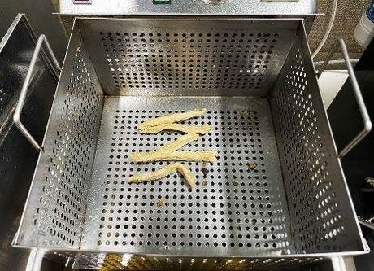
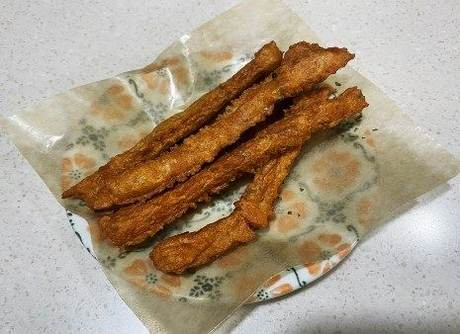

← 목록으로
메뉴명
줄줄이 오뎅튀김(토핑)
판매가격
1,500원(5개)
원재료
오뎅튀김
사용 부자재
앞접시
메뉴특징
쫄깃한 어묵을 바삭하게 튀겨내어 겉바속쫄 식감이 매력적인 스낵형 튀김 메뉴
조리방법

1
180도 튀김기에 포션한
냉동 오뎅튀김 5개(40g)
1봉을 넣고 3분간 튀긴다.
(※기름 충분히 털기)

2
앞접시에 오뎅튀김을 담아 제공한다.
(※유산지 사용 선택가능)
조리방법 - 토핑